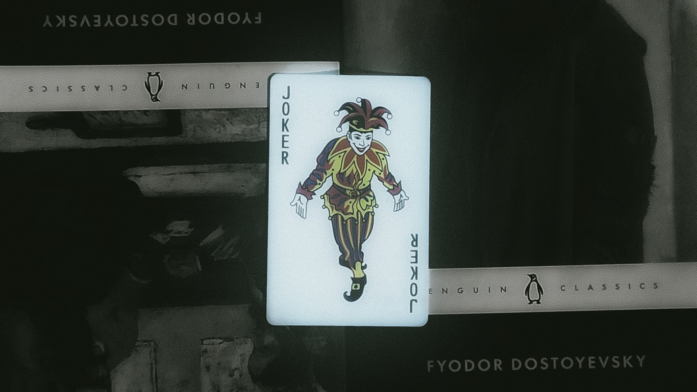

~/cheeflofter
STATUS: ACTIVE // LEVEL 0
student — cyber security — web dev
Cyber student who likes breaking things and then figuring out how to stop people like me. Spend my time between CTFs, home lab chaos, and learning both sides of the fence — offencive and defensive .